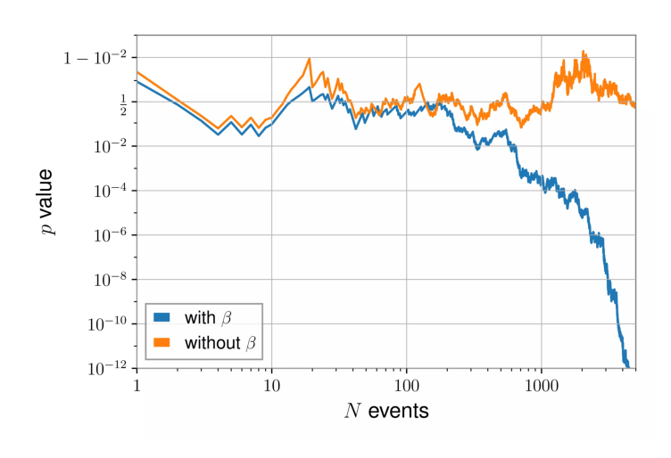
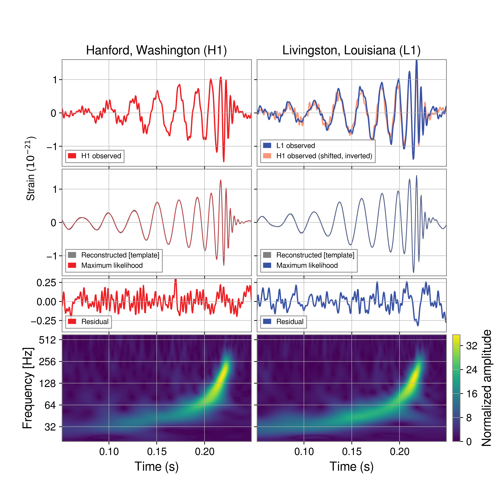

In this chapter, we outline the basic tools used for the estimation of gravitational wave signal parameters, including the Whittle likelihood (Section 3.2), the full time-domain likelihood (Section 3.2.2), strain visualization tools (Section 3.2.3) and likelihood acceleration techniques (Section 3.4).
Furthermore, in Section 3.2.1 we summarize the main result of a recent work on the (lack of) necessity to correct the likelihood for the loss of signal power incurred by windowing the data.
3.1 Fourier transform basics
The starting point for our analysis is typically an estimate for the gravitational wave strain observed by one or more detectors, which is expressed as a discretized time series \(d(i \Delta t)\), with integer \(i\). Each of the entries in this time series is noisy, and they cannot be considered in isolation: due to the wide-band nature of the noise, any given pair of points \(d(i \Delta t)\) and \(d(j\Delta t)\) will in general be correlated. Then, in order to analyze a data segment of duration \(T\), with \(N = T / \Delta t\) samples, we would naïvely need to consider all \(N^{2}\) combinations.
The Fourier transform of the signal can come to our aid: its continuous version is \[
\tilde{h}(f) = \int_{-\infty}^{\infty} h(t) \exp(-2\pi i ft)\text{d}t\,,
\] while the discrete version, computed at a frequency \(f = m / T\) with integer \(m\), is \[
\tilde{h}(m / T) = \Delta t \sum_{n=0}^{N-1} h(n \Delta t) \exp \left( -\frac{2 \pi i mn }{N} \right)\,.
\tag{3.1}\]
Note 3.1: Fourier transform periodicity and range
While Equation 3.1 can be computed for any \(m \in \mathbb{Z}\), it only contains independent information for \(0 \leq m < N / 2\): since our time domain signal is real-valued we have \(\tilde{h}(-m / T) = \tilde{h}^{*}( m / T)\), and by the periodicity of the complex exponential \(\tilde{h}(m /T) = \tilde{h}( (m+N) / T)\).
Starting from \(N\) real-valued samples in time we then get \(N / 2\) complex-valued ones in frequency. The frequency samples are spaced by \(1 / T\), while the highest frequency available is \(1 / 2 \Delta t = f_s\), the Nyquist frequency. Any component in the signal with a higher frequency, \(f > f_s\), will experience aliasing: it will appear in the Fourier transform of the data at an artificially lower frequency, \(f - k f_s\) for some integer \(k\) chosen such that \(0 < f - k f_s < f_s\).
The Fast Fourier Transform algorithm allows us to compute this relatively quickly, in \(O(N \log N)\) operations (Heideman, Johnson & Burrus 1984).
Under some assumptions, the Fourier components of the noise are uncorrelated among each other. Because of this, we will start our discussion with the Fourier-domain Whittle likelihood (Section 3.2), which has an \(O(N)\) complexity, but also describe the way parameter estimation can be performed when those assumptions break down and the Fourier-domain noise is not diagonal (Section 3.2.2).
3.2 The Whittle likelihood
The likelihood expresses the answer to the question:
How likely are we to have observed the data \(d\), under the assumption that this data can be decomposed as noise \(n\) plus a signal \(h(\theta)\) with fixed parameters \(\theta\)?
If we are writing the data as \(d = n + h(\theta)\), this is equivalent to asking:
How likely are we to observe a noise realization equal to \(n = d - h(\theta)\)?
In order to answer this, we need a model for the noise. In gravitational wave data analysis, it is commonly assumed that the noise can be described as a stationary time series, \(n(t)\), whose autocorrelation \(\mathbb{E}[n(t)n(t+\Delta t)] \equiv \gamma(\Delta t)\) can be expressed as a function of \(\Delta t\) only (Edwards, Meyer & Christensen 2015). A further assumption made is that the noise has zero mean (\(\mathbb{E}[n(t)] = 0\) for any time).
The Fourier transform of the autocorrelation function \(\gamma(\Delta t)\) is called the Power Spectral Density, \(S_{n}(f)\), which can alternatively be expressed as (Moore, Cole & Berry 2015): \[
\langle n(f) n^{*}(f') \rangle = \frac{1}{2} \delta(f-f') S_{n}(f)\,.
\]
As defined, this is the one-sided PSD, which satisfies \[
\langle \lvert n(t) \rvert ^{2} \rangle = \int_{0}^{\infty} S_{n}(f) \text{d}f\,.
\] We could have alternatively defined it without the \(1 / 2\) factor, simultaneously extending the integral from \(-\infty\) to \(\infty\). The negative-frequency contribution to the integral is equal to the positive-frequency one, since the signal and noise are real-valued. Sometimes, the Amplitude Spectral Density (ASD) is also quoted, which in gravitational wave data analysis is defined as the square root of the PSD, with units of \(\text{Hz}^{-1/2}\):1\[
A_{n}(f) = \sqrt{ S_{n}(f) }\,.
\tag{3.2}\]
1 More in general, the ASD has units of \(x / \sqrt{ \text{Hz} }\), where \(x\) is the unit of the time-domain noise. For example, if we were characterizing acceleration noise \(x\) would be \(\text{m/s}^2\).
2 For a detailed discussion of the periodicity assumption, see Section 3.2.1.
The PSD can be used for the characterization of the second moment of any stationary noise; if we further assume that the noise is Gaussian and the data are periodic,2 we can obtain the Whittle approximation to the Gaussian likelihood (Roulet & Venumadhav 2024, Whittle 1957):
where \(T\) denotes the duration of the data segment.
The normalization terms \(\mathcal{N_{1}}\) and \(\mathcal{N_{2}}\) are different, but crucially they only depend on the Power Spectral Density, not on the specific noise realization.
In the last equation, we introduced the notation \((\cdot | \cdot)\) for the noise-weighed inner product between waveforms, defined as
\[ (a | b) = 4 \Re \int_0^\infty \frac{a(f) b^*(f)}{S_n(f)}\text{d}f \,,
\tag{3.3}\]
where \(z^*\) is the complex conjugate of \(z\), while \(\Re\) denotes the real part operator, defined so that \(\Re z = (z+z^*) / 2\).
More specifically, this likelihood answers the question:
How likely is it that noise distributed according to the PSD \(S_{n}(f)\) will have the specific realization \(n\)?
It is possible to infer the PSD together with the signal parameters (Edwards, Meyer & Christensen 2015), but in the data analysis for gravitational wave signals from ground-based interferometers, it is common practice to fix the PSD to an estimate obtained considering data near the event. This is acceptable, since variations in the noise distribution typically happen on much slower time scales than duration of the signal itself.
In such a case, we can rewrite the likelihood in terms of the signal \(h(\theta) = d - n\) as follows:
We can work around the messy normalization term (Roulet & Venumadhav 2024). Our likelihood is written assuming that a signal is present in the data, but supposing that was not the case, we would have \(d = n\) and therefore
Since we are assuming the PSD is fixed, this model has zero parameters, and this likelihood can also be interpreted as an evidence: \(\log \mathcal{L}(d | \text{noise only}) = Z _\text{noise}\).
Therefore, we can perform parameter estimation using the likelihood ratio
and the evidence we will obtain, the integral of \(\mathcal{L}_{r}(d|\theta) \pi(\theta) \text{d}\theta\) over the parameter space, will actually be a Bayes Factor, \(Z_\text{signal and model} / Z_\text{noise}\).
3.2.1 Non-periodic data: windowing
The Fourier transform in equation Equation 3.1 is, technically speaking, only appropriate if the data is periodic. This is not the case for realistic data: on the contrary, we only want to consider a given segment in time around our event. Then, the noise matrix will not be exactly diagonalized by the Fourier transform.
We can model the process of selecting a finite chunk of data from a theoretically infinite process as multiplication by a window function \(w(t)\)(Talbot et al. 2021): if the data time series is \(d_{i}\), originating from an infinite process \(D_{i}\), we can define a corresponding window time series \(w_{i}\) and get \[
d_{i} = D_{i} w_{i}\,.
\] The series \(w_{i}\) is here simply defined to be 1 for indices inside the window, and 0 outside. In the Fourier domain, multiplication is replaced by convolution: \[
\tilde{d}_{k} = (\tilde{D} * \tilde{w})_{k} = \Delta t \sum_{j=0}^{N-1} D_{j} w_{j} \exp \left( - \frac{2 \pi i j k}{N} \right) \,.
\]
Any window function will therefore introduce spectral leakage, making the noise covariance significantly non-diagonal in the frequency domain.
In gravitational wave science, the Tukey window is commonly chosen: \[
w(t) = \begin{cases}
\frac{1}{2} \left[ 1-\cos \left( \frac{2 \pi t}{\alpha T} \right) \right] & 0\leq t \leq \alpha T / 2 \\
1 & \alpha T / 2 \leq t \leq T/2 \\
w(T-t) & 0 \leq t \leq T
\end{cases}
\]
It significantly decreases spectral leakage compared to the rectangular window, as seen in Figure 3.1, despite leaving the central \(1-\alpha\) seconds of the data unchanged.
Figure 3.1: A comparison of a rectangular and Tukey window function in the time and frequency domains.
Applying a Tukey function with parameter \(\alpha\) to a stationary time series will, on average, reduce its power to a fraction of the total given by (Talbot et al. 2025)\[
\beta = \int w^{2}(t) \text{d}t = 1- \frac{5\alpha}{8}\,.
\]
Before mid-2025, it was common practice in the analyses performed by the LIGO-Virgo-KAGRA collaboration to counteract this effect by rescaling the whole data segment by a factor \(1/\sqrt{ \beta }\).
the non-diagonality in the noise matrix introduced by the Tukey window has no significant impact on inference if the data segment is long enough;3
rescaling the data by \(1 / \sqrt{ \beta }\) brings about a small, but detectable, systematic bias in inference.
3 The precise requirement is as follows: let us define \(D_{w}\) as the diagonal matrix which applies the whitening operation in the time domain, and the whitening filter \(\mathcal{W}\), written in terms of the noise covariance matrix \(C\) as \(\mathcal{W}^{\top} \mathcal{W} = C^{-1}\). Then, the impact on inference is small as long as the two quantities \(\mathcal{W}h\) and \(\mathcal{W}(1-D_{w})d\) do not significantly intersect.
The second point was shown through a pp-plot. For a few thousand times, a signal was injected and recovered in a data segment, with or without the correction. The recovery was performed only varying the luminosity distance of the signals.
(a) p-p plot for the distance-only injections with and without the correction.

(b) K-S test p-value as a function of the number of injected signals. The p-value is shown on a logit scale (Note 2.1).
Figure 3.2: Tests of the impact of the window factor on parameter estimation, adapted from Talbot et al. (2025).
It shows signs of overconstraining: compare with the example in Figure 2.7. Rescaling the data is equivalent to multiplying the log-likelihood by \(1/ \beta\), which makes its peak artificially too narrow.
3.2.2 Non-periodic data: time domain parameter estimation
The procedure of windowing and tapering the data works well enough for the analysis of a full gravitational wave signal, for which we can consider a relatively long segment around the event. However, in some cases we do not have that luxury: for example, the ringdown is the last section of the signal from a black hole coalescence, in which the remnant black hole settles to a quiescent state (see Section 4.2). In the analyis of this part of the data, it is crucial to be able to isolate the perturbative regime, which only describes the data well starting a certain time after the merger.
To this end, we want to only analyze data starting from a specific point in time which “cuts off” part of the signal in the region where it is stronger. Trying to impose this kind of sharp time-domain cut in the frequency domain is a losing endeavour. The solution is to go back to a time-domain likelihood, in the form: \[
\mathcal{L}(d|\theta) = - \frac{1}{2}\sum_{i,j=0}^{N} (d_{i}-h_{i}) C_{ij}^{-1} (d_{j}-h_{j}) + \text{const.}
\] where \(d_i\) and \(h_i\) are the discretized time-domain data and predicted strain, defined so that the index \(i=0\) corresponds to the cut time (Isi & Farr 2021).
The time-domain covariance \(C_{ij}\) is not diagonal, unlike the frequency-domain one. Still, there are some computational tricks one can use.
We need two definitions: a matrix is said to be Toeplitz if its diagonals contain constant values: for all \(0\leq i,j < N\), we have \(C_{ij} = C_{{(i+1)(j+1)}}\). An \(N\times N\) Toepliz matrix has \(2N-1\) independent entries. A symmetric Toeplitz matrix, furthermore, satisfies \(C_{ij}=C_{ji}\), and only has \(N\) independent entries. It can be expressed in terms of a vector \(\rho\) with \(N\) entries: \(C_{ij} = \rho_{|i-j|}\). A circulant matrix is a Toeplitz matrix in which every row is equal to the previous one, shifted by one: \(C_{ij} = \rho_{{(i-j) \text{ mod }N}}\); if the circulant matrix is symmetric, then \(C_{ij} = \rho_{|i-j| \text{ mod } N}\). A symmetric circulant metric only has \(\lceil N / 2 \rceil\) independent entries.
The time-domain noise covariance of a stationary process is always symmetric Toeplitz: its entry \(C_{ij}\) describes the covariance between time \(i\Delta t\) and time \(j \Delta t\); by stationarity, this can only depend on the delay \((i-j)\Delta t\), therefore only on the difference \(i-j\). As this is a covariance matrix it will be symmetric: the entries can actually only depend on the modulus of the index difference, \(|i-j|\). Furthermore, if we impose periodic boundary conditions then the covariance is also circulant; we cannot do so in the time-limited case.
Circulant matrices are exactly diagonalized by the discrete Fourier transform. Toeplitz matrices are not, but they can be fully characterized by the autocovariance function \(\rho\): \(C_{ij}= \rho(|i-j|)\).
The time-domain likelihood can be written as in Equation 3.4, but with scalar products in the form (Isi & Farr 2021)\[
(a|b)_{\text{TD}} = \sum_{i, j= 0}^{N-1} a_{i} C^{-1}_{ij} b_{j}\,.
\] If \(C\) is Toepliz, this can be efficiently computed with a standard routine such as Levinson–Durbin recursion, which returns a the solution \(x\) to a linear system \(b_{i}=C_{ij}x_{j}\) when \(C\) is a Toeplitz matrix. Alternatively, one can compute the lower-triangular Cholesky factor \(L\) such that \(LL^{\top} = C\), invert it, and then compute the product as the scalar product of the whitened vectors \(L^{-1}a\) and \(L^{-1}b\)\[
(a|b)_\text{TD} = (L^{-1}a)\cdot(L^{-1}b)\,.
\]
3.2.3 Strain plotting and whitening
It is common for data analysts to wish to start their description of some signal by showing the corresponding unprocessed data, the starting point for their endeavors to draw physical meaning. Being able to show unprocessed data is also useful in the context of scientific communication, since it allows the presenter to show a figure which can be immediately understood.
This task is made tricky in the context of gravitational wave analysis by the nature of the noise. The sensitivity “bucket” in the frequency domain means that the magnitude of the noise outside a given band completely overwhelms the time-domain data: in ground-based observations, while typical strain magnitudes are on the order of \(10^{-21}\) or less, raw time-domain strain data is often \(> 10^{-18}\).
If we are determined to show strain, we need to filter the series: Figure 3.3 shows this for GW250114. A Butterworth band-pass filter between \(35 \text{Hz}\) and \(350 \text{Hz}\) was applied twice to the data, in addition to a notch filter at \(60 \text{Hz}\) to remove power grid-driven noise. The original detection paper for GW150914 (LIGO Scientific Collaboration and Virgo Collaboration et al. 2016) used many more hand-tuned notches to eliminate the numerous spectral features present in the noise at that time, which have fortunately been reduced nowadays.

Figure 3.3: GW250114, shown in the same way as the first figure from the discovery paper for GW150914, LIGO Scientific Collaboration and Virgo Collaboration et al. (2016).
Besides the apparent technical complexity of this approach and its many parameters, its residuals are problematic. Residuals computed subtracting a filtered model from filtered strain data have little meaning, since their distribution is hard to model and frequency-dependent: one should refrain from trying to draw visual conclusions based on their patterns and magnitude, which essentially removes all of the potential utility in showing them. Furthermore, the filtering process can introduce artefacts in the data: the fact that the signal model does not exactly approach zero after the merger is one of these.
A significant advantage of showing filtered data, on the other hand, is being able to show the actual signal magnitude, on the order of \(10^{-21}\), on the \(y\)-axis. The alternative approach, which has become the standard nowadays, does not share this.
Whitening the data means normalizing it to the noise. Applying the whitening procedure to a noise-only data stream returns white noise. In the frequency domain, whitening a series \(h(f)\) means defining \[
h_{w}(f) = h(f) \sqrt{ \frac{4}{T S_{n}(f)} }\,,
\] where \(S_{n}\) is the noise power spectral density, while \(T\) is the segment duration. With this normalization, each noise entry has variance 2 (due to its independent real and imaginary components) (Bilby.gw.detector.interferometer.Interferometer — bilby 2.8 documentation). This can also be generalized to time-domain analyses, as discussed in Section 3.2.2.
In the presence of a signal, whitened time-domain strain will deviate from its mean of zero; the deviation amount can be immediately interpreted as a number of standard deviations. For GW250114, this reached the level of 15\(\sigma\), as one can see in Figure 4.2.
3.3 Matched filtering and the signal-to-noise ratio
The discussion so far has discussed the analysis of a signal we know to be present in the data. However, the tools we described can also be used to quantify the detectability of a signal.
The matched-filter signal-to-noise ratio (SNR) statistic \(\rho\) for the data \(d\), assuming a template \(h\), is given by \[\rho _\text{MF} = \frac{(d | h)}{\sqrt{(h|h)}}
\] in terms of the scalar products defined in Equation 3.3.
A common approach, when looking for a signal in the data, is to look for high values in this quantity for a large set of templates \(h\).
If we fix the template \(h\) we can also compute the expectation value of the SNR when varying the noise realization: \[
\rho _\text{opt} = \mathbb{E}_{n} \left[ \frac{(d|h)}{\sqrt{ (h|h) }} \right] = \sqrt{ (h|h) }\,.
\tag{3.5}\] This is called optimal SNR, though it involves no optimization procedure. If a template with a given optimal SNR is injected into Gaussian noise, the matched-filter SNR is equally likely to be higher and lower than the optimal value.
Since the optimal SNR depends on an integral in the form \(\rho _\text{opt}^2 \sim \int |h|^2 / S \text{d}f\), independent SNRs (such as ones from different detectors, or different frequency bands considered independently) add in quadrature: \[
\rho _\text{tot}^{2} = \sum_{i} \rho_{i}^{2}\,.
\]
The highest SNR for a gravitational wave signal, as of early 2026, was achieved by the event GW250114 (Abac et al. 2025), which reached a value between 77 and 80 when combining the Livingston and Hanford LIGO detectors.
3.3.1 SNR thresholds
This section gives a brief outline of the way to estimate what value of SNR is sufficient for a signal to be “detectable”. This is useful information in the context of forecasting the number of detected signals by some detector that is not yet operational.
If we were searching for a signal without any possible shift in time and with the certainty that the noise did not contain any glitches or non-Gaussianities, then the SNR would simply follow a \(\chi^2\) distribution with two degrees of freedom (Babak et al. 2013), meaning that we could reach “five \(\sigma\)” significance (\(p\)-value of \(5.7\times 10^{-7}\)) with a threshold of \(\rho = 5.5\).
This is not the case in real data, since both the aforementioned assumptions are false: the different possible arrival times of a signal are effectively “more trials”, but more importantly the non-Gaussianity of the noise means that high-SNR triggers in a matched filtering search will be much more common than simple Gaussian statistics would indicate. Accounting for these factors is tricky, and in real data it is typically accomplished by performing time-slides: taking real detector data, but shifted across detectors by more than \(t_{\text{min}} = d/c\), where \(d\) is the maximum distance separating them. In the assumption that signals are rare (which holds for current detectors, for ET this will have to be challenged), this allows us to generate arbitrary amounts of noise-only realistic data by removing all possible coincidences. We can then compute the rate of noise instances surpassing our threshold, even if this rate is very low. With this, we can compute the false-alarm rate (FAR) associated to a given SNR threshold. It should be noted that real searches are significantly more sophisticated than SNR maximizers; for example, PyCBC requires that each frequency band contributes appropriately to the SNR (Nitz et al. 2018), which allows us to discard many loud glitches.
Nevertheless, high SNR is correlated with low FAR for real signals, and the scaling of the FAR as a function of SNR, in the absence of large outliers, is typically exponential (Lynch et al. 2018): \[ \text{FAR} \approx \text{FAR}_8 \exp \left( - \frac{\rho - 8}{\alpha}\right) \,.
\]
The specific values for the FAR at \(\rho = 8\) and the scaling parameter \(\alpha\) are found through a fit, and they depend on the signal template. A fit of O1 data found \(\alpha = 0.18\) and \(\text{FAR}_8 = 5500 \text{yr}^{-1}\) for BBH, and \(\alpha = 0.13\) and \(\text{FAR}_8 = 30000 \text{yr}^{-1}\) for BNS. This value of \(\alpha\) means that the exponential cutoff is quite steep: for example, bringing the BNS FAR from 30 thousand per year to just one per year only requires us to raise the equivalent threshold to \(\rho = 9.4\) on average.
Based on this, we can determine the SNR threshold we should consider as a minimum for detectability in forecasting. Despite not knowing which glitches will affect our future detectors, this sharp exponential behavior gives us confidence that values in the range of roughly 8 to 12 will be sufficient to guarantee that the number of false positive detections is low enough.
What constitutes a “low enough” rate of false positives is subjective, and the choice of a threshold will depend on the rate of true detections for a given type of source, as well as other considerations. For example, in the fourth observing run of the LIGO-Virgo-KAGRA collaboration (O4), alerts were labelled “significant” with a false alarm rate of less than one per month when relative to compact binaries, but they required a FAR of less than one per year if they were relative to bursts (Chaudhary et al. 2024).
3.3.2 Noise plotting and characteristic strain
A common task in gravitational wave analysis and forecasting is to compare signal and noise for a given observation as a function of frequency. Qualitatively, most detectors’ noise PSDs \(S_{n}(f)\) exhibit a sensitivity “bucket”, a frequency range in which they are most sensitive, with noise rising to either side. We would like to compare this bucket to the signal’s Fourier spectrum, \(\tilde{h}(f)\). Unfortunately, simply showing them on the same axis does not make sense, even though they have the same unit of \(\text{Hz}^{-1}\). To understand this, consider the equivalent scenario if we were comparing the PSD and a Fourier spectrum for displacement: then, the PSD would have units of \(\text{m}^{2} / \text{Hz}\), while the Fourier domain signal would have units of \(\text{m} / \text{Hz}\). This discrepancy is hidden by the fact that our signal, strain, is dimensionless, but it remains a conceptual problem, and qualitatively the orders of magnitude of these two quantities make it very obvious.
In order to show these quantities together in a useful manner, we can look at the integral which defines the optimal SNR in Equation 3.5: \[
\rho^{2} _\text{opt} = 4 \int \frac{|\tilde{h}(f)|^{2}}{S_{n}(f)} \text{d}f\,.
\]
The ratio in the integrand is the relevant comparison to determine the clarity of a signal with Fourier transform \(|\tilde{h}(f)|\) measured by a detector with a PSD \(S_{n}(f)\). This ratio still has units of \(\text{Hz}^{-1}\), and we generally want to show this quantity as a function of logarithmic frequency: both of these issues are solved by rewriting the integral as \[
\rho^{2} _\text{opt} = \int \left( \frac{2f |\tilde{h}(f)|}{\sqrt{ f S_{n}(f)}} \right)^{2} \text{d} \log f
= \int \frac{h_{c}^{2}(f)}{h_{n}^{2}(f)} \text{d}\log f
\,.
\]
This defines the characteristic signal strain\(h_{c}(f) = 2 f |\tilde{h}(f)|\) and the characteristic noise strain\(h_{n}(f)=\sqrt{ f S_{n}(f) }\), both of which are dimensionless.
For more details on this and other ways to compare signal and noise, including for example computing the energy density contained in gravitational waves, see Moore, Cole & Berry (2015).
3.4 Likelihood acceleration
This section will discuss common approaches which can be used to accelerate the computation of a frequency-domain Whittle likelihood.
The two terms we need to compute for the likelihood ratio (Equation 3.4) are the following integrals: \[
\Re(h(\theta)| d) = 4 \Re\int_{0}^{f_\text{max}} \frac{h(f; \theta) d^*(f)}{S_{n}(f)} \text{d}f\,,
\] and
The baseline approach is to evaluate these as Riemann sums on the full Fourier-domain grid (also called the “FFT grid”), which as we outlined in Note 3.1 has \(T / 2\Delta t\) frequency bins. This becomes less and less practical the longer the data segment is.
Several approaches to accelerate this computation have been proposed, see section 3 in Roulet & Venumadhav (2024) for a review. Here we will outline two of the most popular: relative binning and reduced order quadrature.
The efficacy of both approaches is fundamentally driven by their ability to decrease the number of frequencies at which the waveform approximant is evaluated. This will generally reduce the total evaluation time, but only to a point: in Figure 5.11 we illustrate that the general scaling of waveform model evaluation takes the form \(t = t_1 + N t_{2}\), where \(N\) is the number of grid points. Decreasing \(N\) significantly below \(t_{1} / t_{2}\) is going to exhibit diminishing returns.
3.4.1 Relative binning
Relative binning (Zackay, Dai & Venumadhav 2018) is a technique to accelerate the evaluation of the integrals in the likelihood using the key idea that, while the waveform itself may be highly oscillatory, all the waveforms which are compatible with the data will be quite similar to each other (in a specific sense).
Starting from a reference waveform \(h_{0}(f)\), we define the ratio \(r(f) = h(f) / h_{0}(f)\) of the generic waveform \(h\) to the reference one \(h_{0}\). A good reference waveform can be computed, for example, by looking for the maximum value of the likelihood. This is still a “cheap” operation compared to sampling, and can be performed at full resolution.
Then, we can define a relatively coarse grid in frequency, and approximate \(r(f)\) to linear order within each bin \(b\): for all frequencies \(f\) in the bin, \[
r(f) = r_{0}(b) + r_{1}(b) (f-f_{m}(b)),
\tag{3.6}\] where \(f_{m}(b)\) is the central frequency in the bin.
Then, we compute some summary statistics: for each bin \(b\), define \[
\begin{aligned}
A_{0}(b) &= \int_{f\in b} \frac{d(f) h^{*}_{0}(f)}{S_{n}(f) / T} \\
A_{1}(b) &= \int_{f\in b} \frac{d(f) h^{*}_{0}(f)}{S_{n}(f) / T} (f-f_{m}(b)) \\
B_{0}(b) &= \int_{f\in b} \frac{|h_{0}(f)|^{2}}{S_{n}(f) / T} \\
B_{1}(b) &= \int_{f\in b} \frac{|h_{0}(f)|^{2}}{S_{n}(f) / T} (f-f_{m}(b))\,.
\end{aligned}
\]
These integrals need to be computed at maximum resolution in frequency, but only once, with the reference waveform. With these at hand, the two terms are approximated as follows, in terms of a set of frequencies \(b = \left\lbrace f_{i}\right\rbrace\):
\[
\mathcal{L}_{hd} = \Re \sum_{b} (A_{0}(b) r_{0}^{*}(b) + A_{1}(b) r_{1}^{*} (b))
\] and \[
\mathcal{L}_{hh} = \sum_{b} ( B_{0}(b) |r_{0}(b)|^{2} + 2 B_{1}(b) \Re(r_{0}(b) r_{1}^{*}(b)))\,.
\] The values of the constant and linear coefficients for each bin, \(r_{0}\) and \(r_{1}\), can be be computed from the values of the ratio at the bin edges as \[
r_{0}(b) = \frac{r(b)+r(b+1)}{2}
\qquad \text{and} \qquad r_{1}(b) = \frac{r(b+1)-r(b)}{\text{d}f(b)}\,.
\]
Crucially, this depends on the ratio \(r(f)\) being relatively smooth across the frequency axis. This is expected to be approximately true for all the relevant points in the posterior, potentially not if we stray from its peak.
The formulation given here works well in the absence of spin-induced orbital precession. In its presence it breaks down, since the smooth structure of the waveforms is not preserved — the residual \(r(f)\), directly computed, is not smooth enough for Equation 3.6 to be a good approximation. However, this can be counteracted by performing a mode-by-mode decomposition in the orbital frame of the binary (see Section 6.1.1.3) and then approximating those ratios as smoothly varying (Narola et al. 2023).
For an example of how the waveform ratio \(r(f)\) might look, see Figure 8.14, where it is computed in a specific case for the Lunar Gravitational Wave Antenna.
To our knowledge, this framework has not been applied in the case of eccentric waveforms. Doing so in the frequency domain would likely be more efficient if a decomposition of these waveforms into harmonics is performed. The relative binning approach can also be applied to time-domain analyses (Sharma, Vijaykumar & Kumar 2026), which might be helpful in this scenario.
Noisy summary data for injections
Relative binning allows for the cheap generation of simulated summary data under the Gaussian noise assumption (Zackay, Dai & Venumadhav 2018), in the context of an injection for which the true waveform parameters are known, allowing us to set \(h_0 = h_{\text{true}}\).
In that case, the data \(d\) can be decomposed as \(h_0 + n\), and the summary data \(A_0\) and \(A_1\) can be written as
While \(B_0(b)\) and \(B_1(b)\) are real-valued by construction, \(\delta A_0(b)\) and \(\delta A_1(b)\) are complex-valued random variables; their phases are uniformly distributed in \([0, 2 \pi)\), while their amplitudes are distributed according to a multivariate normal distribution with mean zero and covariance
where we define \[
B_{2}(b) = \int_{f\in b} \frac{|h_{0}(f)|^{2}}{S_{n}(f) / T} (f-f_{m}(b))^2\,.
\]
Since the noise is assumed to be uncorrelated in Fourier space, the distributions of \(\delta A_0(b)\) and \(\delta A_1(b)\) across different frequency bins are also independent.
3.4.2 Reduced order quadrature
Whereas relative binning seeks to closely approximate the likelihood in the region where waveforms “look similar to each other”, reduced order quadrature allows us to obtain a representation which is valid for any point in the prior space (Canizares et al. 2015, Morisaki et al. 2023, Tiglio & Villanueva 2022).
The equations to approximate the terms in the likelihood are somewhat similar: some weights \(\omega\) and \(\psi\) are pre-computed, then the waveform is evaluated on a sparse grid and multiplied by these. \[
\Re (d|h) \approx \sum_{j=1}^{N_{L}} h(f_{j}, \theta) \omega_{j}
\]\[
(h|h) = \sum_{i=1}^{N_{Q}} |h(f_{i}, \theta)|^{2} \psi_{i}\,.
\]
The weights are typically computed with a greedy algorithm, which constructs a basis that will represent all waveforms sampled from the prior to a given tolerance.
Baker et al. (2025) have argued that this method, while being the best currently available option to guarantee an unbiased analysis, can only be extended so far when considering next generation detectors such as the Einstein Telescope and Cosmic Explorer. This is because, when accounting for the Earth’s rotation and frequency-dependent antenna patterns, the computational burden for creating and storing the basis becomes too large.
3.5 Marginalization
If the exact dependence of the likelihood on a given parameter is known, the integral over said parameter can sometimes be performed analytically (Singer & Price 2016, Thrane & Talbot 2019, Veitch & Del Pozzo 2013). This procedure is generally applied to reference phase \(\phi\), distance \(d_{L}\) and reference time \(t_{0}\)(Thrane & Talbot 2019).
With some more advanced techniques, it is possible to marginalize over all extrinsic parameters in order to minimize the number of times an expensive model for the intrinsic ones is evaluated (Lange, O’Shaughnessy & Rizzo 2018, Roulet & Venumadhav 2024).
Here we will outline the analytic marginalization procedure only for the relatively simple case of reference phase, as we used this in Tissino et al. (2026).
3.5.1 Reference phase
Reference phase does not have any astrophysical significance, despite being crucial for a complete description of the signal (Veitch & Del Pozzo 2013).
As we will outline in Section 6.1.1, the emission from a compact binary can be decomposed in harmonics, each of which has a different scaling with orbital phase. If we only consider the dominant, \(\ell |m| = 22\) mode of emission, the waveform’s dependence on the coalescence phase \(\phi_c\) is simply \(h(\phi_c, \theta) = h(\phi_c=0, \theta) e^{2 \mathrm{i} \phi_c}\). For convenience, we shall denote the waveform at a reference phase, \(h(\phi_{c}=0, \theta)\), simply as \(h(\theta)\).
The function \(I_{0}\) appearing in the last expression is a modified Bessel function of the first kind, the solution to the following integral: \[
I_{0}(\sqrt{ A^{2} + B^{2} }) = \frac{1}{2 \pi} \int_{0}^{2\pi} \exp(A \cos \phi + B\sin \phi) \text{d} \phi\,.
\]
Recovering phase from marginalized samples
Since the analytical likelihood is known, it is possible to sample the phase after having performed a run with a phase-marginalized likelihood (Thrane & Talbot 2019).
For any given sample \(\theta\) from a phase-marginalized posterior we can write the posterior as a function of \(\phi_{c}\), conditioned on all other parameters \(\theta\): the integrand in Equation 3.7.
This only requires one evaluation of the intrinsic waveform, since the values are all related by a simple known phase shift; it therefore cheap to explicitly compute the inverse CDF of this distribution and extract a sample from it.
Edwards MC, Meyer R, Christensen N. 2015. Bayesian semiparametric power spectral density estimation with applications in gravitational wave data analysis. http://arxiv.org/abs/1506.00185
Morisaki S, Smith R, Tsukada L, Sachdev S, Stevenson S, et al. 2023. Rapid localization and inference on compact binary coalescences with the Advanced LIGO-Virgo-KAGRA gravitational-wave detector network. http://arxiv.org/abs/2307.13380
Narola H, Janquart J, Meijer Q, Haris K, Broeck CVD. 2023. Relative binning for complete gravitational-wave parameter estimation with higher-order modes and precession, and applications to lensing and third-generation detectors. http://arxiv.org/abs/2308.12140
Sharma N, Vijaykumar A, Kumar P. 2026. Rapid inference of gravitational-wave signals in the time domain using a heterodyned likelihood. http://arxiv.org/abs/2601.11239
Tissino J, Santoliquido F, Iacovelli F, Dupletsa U, Canton TD, et al. 2026. The geometry of lunar gravitational wave detection. http://arxiv.org/abs/2606.04918